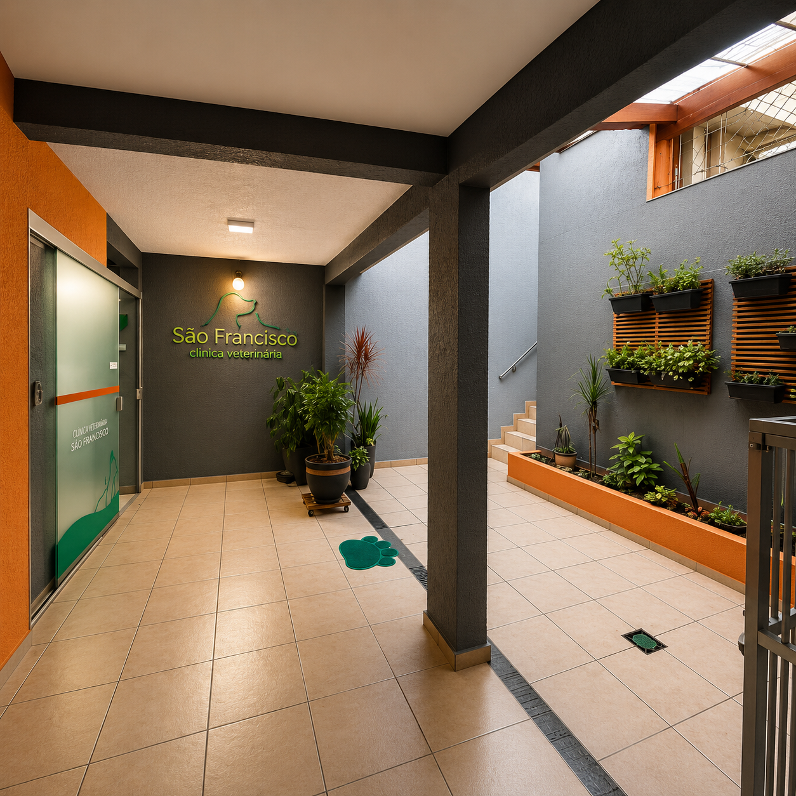
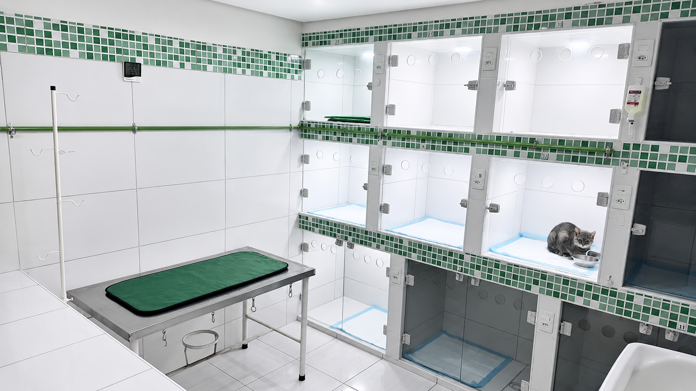
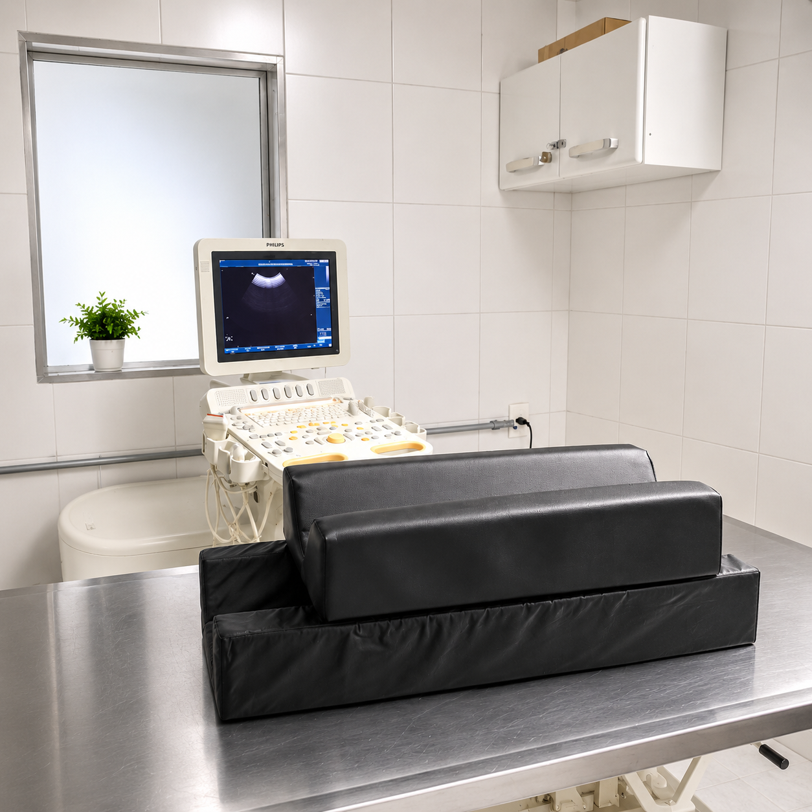
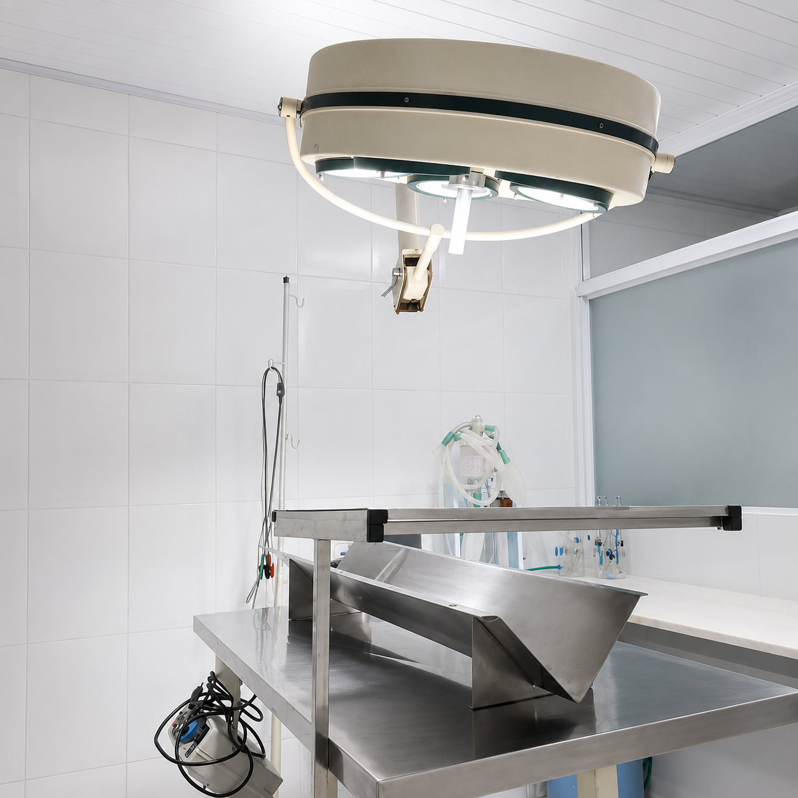
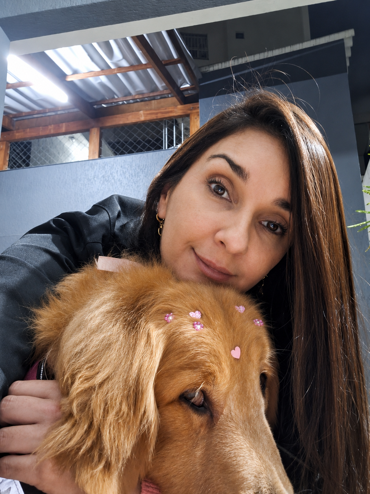
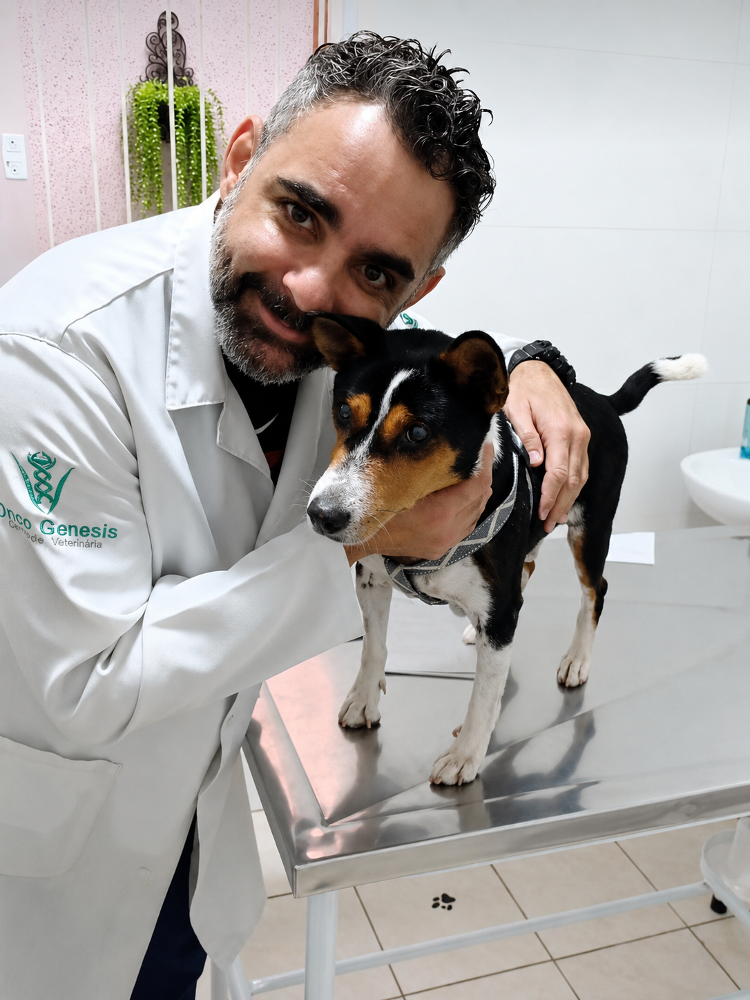
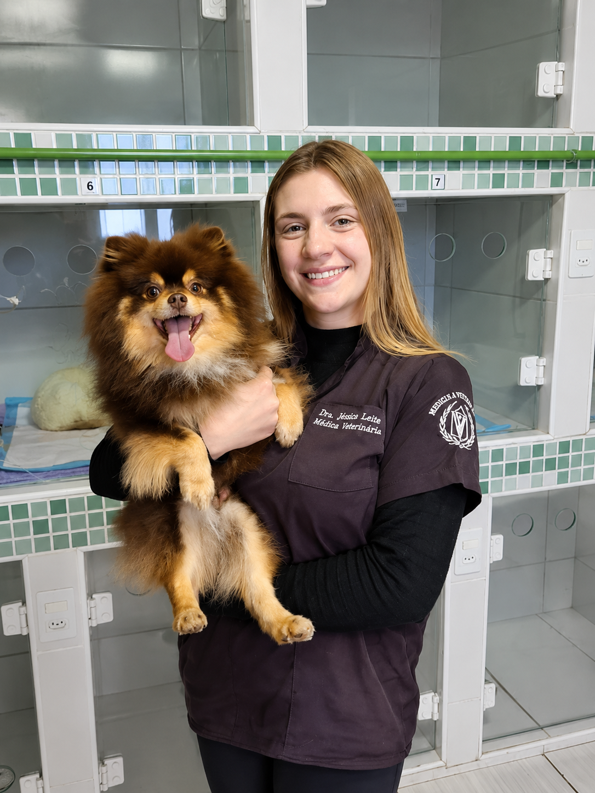
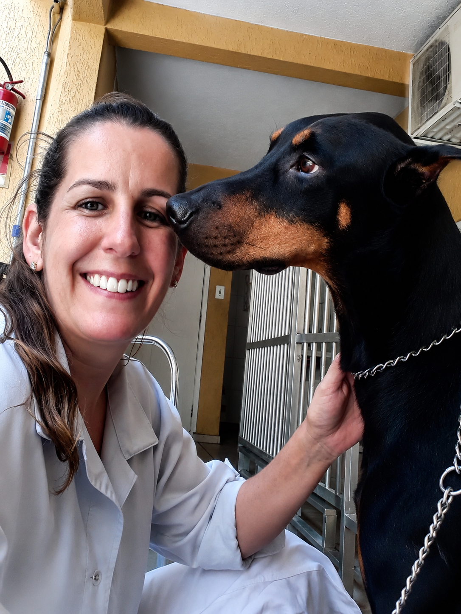
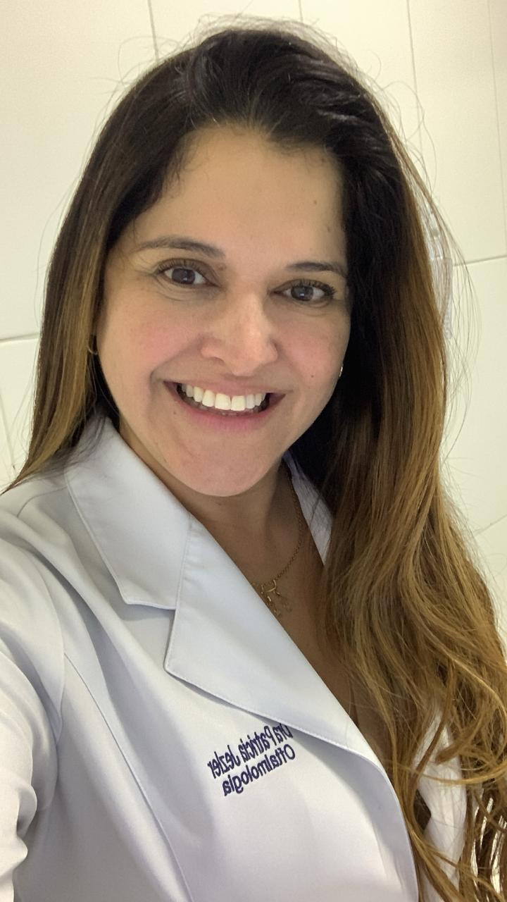
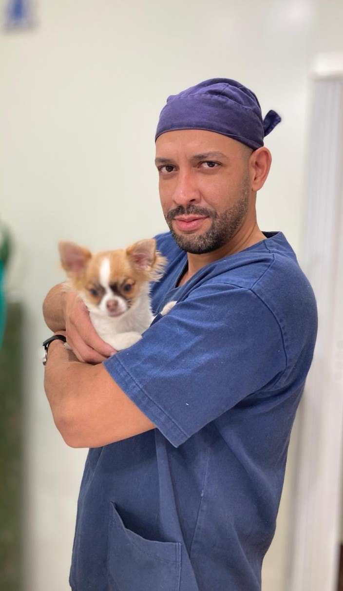

Nossos pacientinhos
Quem a gente cuida todos os dias
Cães, gatos e animais silvestres que confiam na São Francisco. Cada um com sua história — e todos tratados como família.


20 anos cuidando dos pets de Guarulhos. Oncologista com doutorado pela USP, emergência 24h todos os dias e a estrutura mais completa da região — tudo em um único lugar.

A Clínica São Francisco nasceu em 2006 com um propósito claro: oferecer medicina veterinária de excelência para os pets de Guarulhos. Em 20 anos, crescemos, evoluímos e nos tornamos o hospital veterinário mais completo da região.
Nossa equipe reúne especialistas com titulação real — incluindo oncologista Mestre Doutor pela USP —, estrutura de diagnóstico de ponta e a única área verde de soltura da cidade para internações.
Diagnóstico, tratamento e cuidado em um único lugar — para você não precisar correr atrás de nada.
Diagnóstico de alta resolução com resultado imediato e seguro.
Avaliação de órgãos internos com equipamento de última geração.
Avaliação detalhada do coração com especialista em cardiologia.
Monitoramento da atividade elétrica cardíaca com precisão.
Hemograma, bioquímica, urinálise e muito mais — resultados rápidos.
Pioneira em Guarulhos. Diagnóstico minimamente invasivo e preciso.
Protocolo seguro para casos críticos que exigem suporte hematológico.
Cirurgias de alta complexidade em ambiente moderno e esterilizado.
Com área verde exclusiva ao ar livre — única no segmento em Guarulhos.
Atropelamentos, intoxicações, crises convulsivas e hemorragias.
Análise de tecidos para diagnósticos oncológicos e inflamatórios.
Protocolo completo de vacinas para cães, gatos e silvestres.
Respondemos em até 30 minutos · Atendemos hoje
Não é uma clínica de bairro com pretensão de especializada. Veja por dentro a estrutura que nos torna referência em Guarulhos.

Baias individuais climatizadas, com controle de temperatura e acompanhamento contínuo da equipe.

Ultrassom, raio-X digital e ecocardiograma com equipamentos de última geração e laudo no mesmo dia.

Sala equipada para cirurgias de alta complexidade, com foco cirúrgico, monitoração e ambiente esterilizado.
Nossa equipe cobre as principais especialidades da medicina veterinária — com qualificação acadêmica comprovada.
Cada veterinário aqui tem nome, rosto e especialização real. Você não entrega seu pet a um desconhecido.

Mais de 20 anos operando com precisão e cuidado. Tutores que viram ela trabalhar dizem que ela trata cada pet como se fosse o dela.
Cirurgia de alta complexidade
Doutor pela USP — o oncologista veterinário mais titulado de Guarulhos. Quando o diagnóstico é sério, você quer o melhor do estado ao lado do seu pet.
Mestre Doutor USP
Médica veterinária responsável pelo setor de internamento. Acompanha de perto cada pet internado, garantindo monitoramento contínuo e uma recuperação segura e cuidadosa.
Responsável pelo Internamento
Gatos não são cães pequenos — têm necessidades únicas e comunicam diferente. A Dra. Leda entende cada sinal e oferece o cuidado que seu gato merece.
Esp. em Felinos
Especialista na saúde dos olhos do seu pet — de exames de rotina ao tratamento de doenças oculares, com diagnóstico preciso e cuidado dedicado.
Oftalmologia
Atende a clínica geral do dia a dia — das consultas de rotina aos diagnósticos, com olhar atento a cada detalhe da saúde do seu pet.
Clínica GeralCães, gatos e animais silvestres que confiam na São Francisco. Cada um com sua história — e todos tratados como família.
Mais de 619 avaliações no Google. Aqui estão algumas histórias reais de quem confiou o pet à São Francisco.
"Castrei 2 dos meus 4 pequenos e tudo ocorreu perfeitamente — desde a cirurgia realizada com maestria e competência pela Dra. Karin. Recomendo de olhos fechados!"
"Atendimento de urgência às 2h da manhã com todo o profissionalismo. A equipe salvou minha gata. Nunca mais levo meus bichos em outro lugar."
"Meu cachorro foi diagnosticado com um tumor. O Dr. Tarso explicou tudo com clareza e cuidado. A clínica tem estrutura de hospital de verdade, diferente de tudo em Guarulhos."
"A área de internação com espaço verde foi o que me convenceu. Saber que meu pet não ficaria preso num canil durante a recuperação fez toda a diferença. Clínica incrível!"
"Já tentei outras clínicas em Guarulhos mas a São Francisco não tem comparação. Atendimento humanizado, equipe especializada e sempre muito atenciosos com minha pets."
"O Dr. Fábio faz acupuntura no meu cachorro idoso há 1 ano. A melhora na mobilidade dele foi surpreendente. Não sabia que existia acupuntura veterinária e agora não abro mão."
Preencha ao lado e você recebe a confirmação direto no WhatsApp. Sem esperar, sem ligação, sem burocracia.
30 segundos para preencher. A gente faz o resto.
Atropelamentos, intoxicações, convulsões, hemorragias e dificuldade respiratória
Vila Progresso, Guarulhos. Segunda a domingo das 8h às 23h30. Emergência 24 horas, todos os dias do ano.